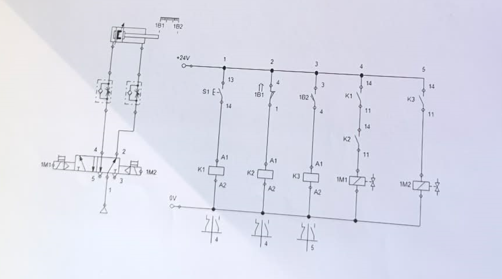

Tantárgy Áttekintése
A Pneumatika tantárgyat a 13. évfolyamban tanultuk. Az óra két fő részből állt: először az elméleti alapokat és számítást tanultuk, majd a gyakorlati részben fizikai pneumatikus kapcsolásokat szereltunk fel a táblákra.
Fő tanulási témakörök:
- Pneumatikus rajzjelek
- Pneumatikus rendszerek szerkesztése - Logikai kapcsolások megtervezése
- Vezetékes módszer
- Pneumatikus alkatrészek - Szelepek, hengerek, váltaszelepoket
- Logikai függvények realizalása pneumatikában - AND, OR, NOT műveletek
Projektek és Feladatok
Elméleti rész:
- Pneumatikus rajzjelek felismerése és rajzolása
- Egyszerű logikai kapcsolások megtervezése papíron
Gyakorlati rész:
- Fizikai felszerelés: Pneumatikus táblákon valós alkatrészek használata
- Kapcsolások felrakása: Szelepek, hengerek, vezetékek felszerelése
- Logikai függvények megvalósítása: AND, OR, NOT, NOR, NAND műveletek
Pneumatikus Diagramok és Gyakorlati Megvalósítások
Tanult rajzjelek:
- Kompresszor
- Szelepek (átváltó, felépítő, stb.)
- Hengerek (egyenletes, kétoldali működésű)
- Nyomásmérő
- Logikai szimbólumok
Gyakorlati kapcsolások:
Autómata Kapcsolás
indirekt vezérléssel
Bekötési rajz
A következő képernyőképen a feladatban szereplő pneumatikus rendszer kapcsolása látható: A+ → B+ → A– → B– sorrendben.

Elektro Pneumatika
A második félévben elkezdtük a pneumatikus rendszerek elektornikus vezérlését is kapcsolókkal illetve relékkel
Bekötési rajz
